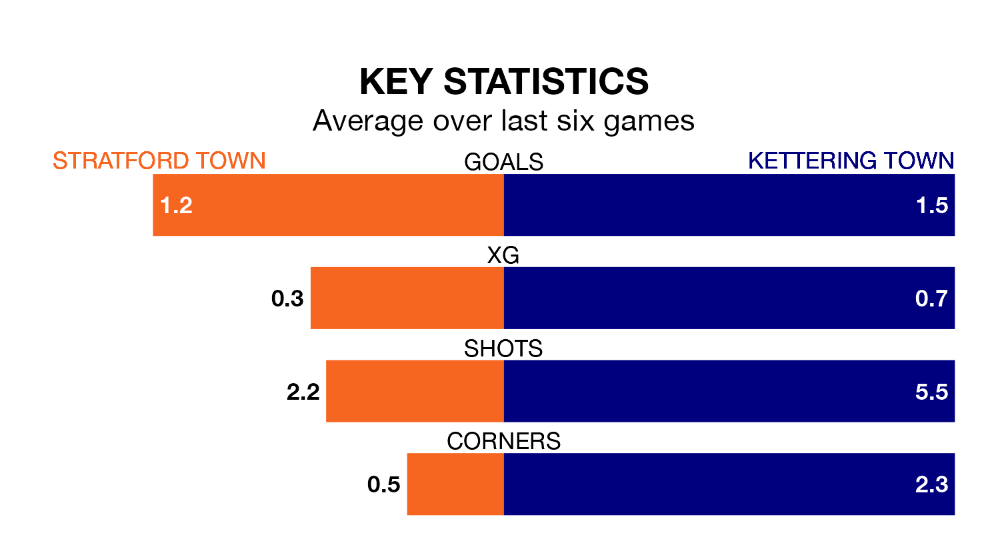

Stratford Town are heavy favourites to keep all three points at home in Monday's kick-off against Kettering Town.
Stratford Town, who sit fourth in the Southern League Premier Central with 36 games played, are priced at 1.7 to seal victory.
Sitting 10 places and 22 points behind them in the table, Kettering are 3.7 to win with *Betting Company*, while the draw is at 3.6.
With 63 goals in 36 games so far this season, Stratford are scoring more than average in the league with 1.8 goals per game. And they are conceding at an average rate, letting in 53 goals at a rate of 1.5 per game.
Kettering, meanwhile, are below average scorers, with 1.3 goals per game, compared to a league average of 1.5. They have conceded 1.9 goals per game.
In the last 10 years, Stratford and Kettering have played each other on nine occasions. Stratford won three of them and Kettering six.
On average, Stratford Town scored 1.3 goals and the Poppies 2.2 in those matches.
Their last meeting was on March 9, when Kettering won 1-0 at home.
Stratford Town are in mixed form in the Southern League Premier Central, with three wins and a draw from their last six games.
With five wins and one loss over that period, Kettering Town's form is better – they have taken 15 points from 18, compared to the home side's 10.
Stratford's last match was on Saturday, a 1-0 win against Stourbridge.
Kettering beat Barwell 2-1 last time out, also on Saturday.
Updated: 10:31 (UTC), 31/03/24